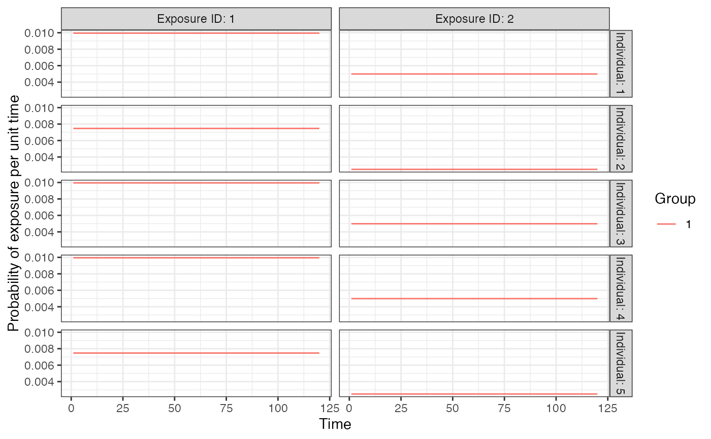
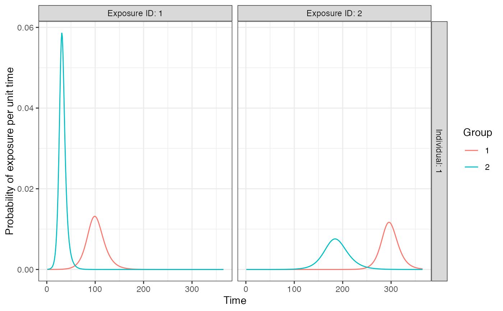

R/generate_plots.R
plot_exposure_model.RdPlots the probability of exposure over time for the provided exposure models
plot_exposure_model(
indivs = 1,
exposure_model,
times,
n_groups = 1,
n_exposures = 1,
foe_pars,
demography = NULL,
...
)| indivs | (optional) vector of individuals to plot exposure probabilities for. This is important if the |
|---|---|
| exposure_model | A function calculating the probability of exposure given the foe_pars array |
| times | Vector of times to solve model over |
| n_groups | Number of groups corresponding to |
| n_exposures | Number of exposure types corresponding to |
| foe_pars | Generic object containing all parameters needed to solve |
| demography | A tibble of demographic information for each individual in the simulation. At a minimum this tibble requires 1 column (i) where all individuals in the simulation are listed by row. This is used to calculate the sample population size. Additional variables can be added by the user, e.g., birth and removal times, see |
| ... | Any additional arguments needed |
A ggplot2 object
## Basic exposure model with demography modifier
times <- seq(1,120,1)
n_groups <- 1
n_exposures <- 2
foe_pars <- array(NA, dim=c(n_groups,length(times),n_exposures))
foe_pars[1,,1] <- 0.01
foe_pars[1,,2] <- 0.005
aux <- list("SES"=list("name"="SES","options"=c("low","high"), "distribution"=c(0.5,0.5)))
demography <- generate_pop_demography(N=5, times, age_min=0, removal_min=1,
removal_max=120, prob_removal=0.2, aux=aux)
#> Joining, by = "i"
dem_mod <- dplyr::tibble(exposure_id=c(1,1,2,2),column=c("SES","SES","SES","SES"),
value=c("low","high","low","high"),modifier=c(1,0.75,1,0.5))
plot_exposure_model(indivs=1:5, exposure_model=exposure_model_dem_mod,
times=times,1,2,foe_pars=foe_pars,demography = demography,dem_mod=dem_mod)

## SIR model with two groups and two exposure types
foe_pars <- dplyr::bind_rows(
dplyr::tibble(x=1,g=1,name=c("beta","gamma","I0","R0","t0"),
value=c(0.3,0.2,0.00001,0,0)),
dplyr::tibble(x=2,g=1,name=c("beta","gamma","I0","R0","t0"),
value=c(0.35,0.25,0.00001,0,200)),
dplyr::tibble(x=1,g=2,name=c("beta","gamma","I0","R0","t0"),
value=c(0.5,0.2,0.00005,0,0)),
dplyr::tibble(x=2,g=2,name=c("beta","gamma","I0","R0","t0"),
value=c(0.27,0.2,0.00001,0,50))
)
plot_exposure_model(exposure_model=exposure_model_sir, times=seq(1,365,by=1),
n_groups = 2,n_exposures = 2,foe_pars=foe_pars)
